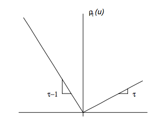

Regressão quantílica em modelos mistos
Álvaro Kothe
16/12/2021
Regressão quantílica
Definição de Quantil
- Qualquer variável aleatória pode ser caracterizada pela sua função de distribuição acumulada \(F(y) = P(Y \leq y)\);
- O p-ésimo quantil é definido como \[F^{-1}(p) = \inf \{y: F(y) \geq p\} = Q(p)\]
- O quantil é uma medida de posição
- O p-ésimo quantil é obtido resolvendo \[\min_{\xi \in \mathbb{R}} \sum _{i=1}^ n \rho_p(y_i - \xi),\]
onde \(\rho_p(u) = u(p - I\{u < 0\})\) é uma função de perda.
Função de perda

Regressão Quantílica
- Na regressão quantílica, é possível caracterizar toda a distribuição condicional da variável resposta;
- Robusta a valores discrepantes;
- É possível estudar mais afundo os extremos de uma população;
- O \(\tau\)-ésimo quantil condicional denotado por \(Q_y(\tau|\boldsymbol{x}) = \boldsymbol{x}' \boldsymbol \beta(\tau)\) pode ser estimado por \(\boldsymbol{x}' \hat {\boldsymbol \beta}(\tau)\), em que \[(\hat \beta_1(\tau), \dots, \hat \beta_p(\tau))' = \arg \min_{\beta \in \mathbb R^p} \sum _{i=1}^ n \rho_p(y_i - \boldsymbol{x}_i' \boldsymbol \beta)\]
Exemplo de robustez da regressão quantílica
Dados de 235 observações sobre o gasto em alimentação e renda em casas Belgas.
## income foodexp
## 1 420.1577 255.8394
## 2 541.4117 310.9587
## 3 901.1575 485.6800
## 4 639.0802 402.9974
## 5 750.8756 495.5608
## 6 945.7989 633.7978
## 7 829.3979 630.7566
## 8 979.1648 700.4409
## 9 1309.8789 830.9586
## 10 1492.3987 815.3602
## 11 502.8390 338.0014
## 12 616.7168 412.3613
## 13 790.9225 520.0006
## 14 555.8786 452.4015
## 15 713.4412 512.7201
## 16 838.7561 658.8395
## 17 535.0766 392.5995
## 18 596.4408 443.5586
## 19 924.5619 640.1164
## 20 487.7583 333.8394
## 21 692.6397 466.9583
## 22 997.8770 543.3969
## 23 506.9995 317.7198
## 24 654.1587 424.3209
## 25 933.9193 518.9617
## 26 433.6813 338.0014
## 27 587.5962 419.6412
## 28 896.4746 476.3200
## 29 454.4782 386.3602
## 30 584.9989 423.2783
## 31 800.7990 503.3572
## 32 502.4369 354.6389
## 33 713.5197 497.3182
## 34 906.0006 588.5195
## 35 880.5969 654.5971
## 36 796.8289 550.7274
## 37 854.8791 528.3770
## 38 1167.3716 640.4813
## 39 523.8000 401.3204
## 40 670.7792 435.9990
## 41 377.0584 276.5606
## 42 851.5430 588.3488
## 43 1121.0937 664.1978
## 44 625.5179 444.8602
## 45 805.5377 462.8995
## 46 558.5812 377.7792
## 47 884.4005 553.1504
## 48 1257.4989 810.8962
## 49 2051.1789 1067.9541
## 50 1466.3330 1049.8788
## 51 730.0989 522.7012
## 52 800.7990 572.0807
## 53 1245.6964 907.3969
## 54 1201.0002 811.5776
## 55 634.4002 427.7975
## 56 956.2315 649.9985
## 57 1148.6010 860.6002
## 58 1768.8236 1143.4211
## 59 2822.5330 2032.6792
## 60 922.3548 590.6183
## 61 2293.1920 1570.3911
## 62 627.4726 483.4800
## 63 889.9809 600.4804
## 64 1162.2000 696.2021
## 65 1197.0794 774.7962
## 66 530.7972 390.5984
## 67 1142.1526 612.5619
## 68 1088.0039 708.7622
## 69 484.6612 296.9192
## 70 1536.0201 1071.4627
## 71 678.8974 496.5976
## 72 671.8802 503.3974
## 73 690.4683 357.6411
## 74 860.6948 430.3376
## 75 873.3095 624.6990
## 76 894.4598 582.5413
## 77 1148.6470 580.2215
## 78 926.8762 543.8807
## 79 839.0414 588.6372
## 80 829.4974 627.9999
## 81 1264.0043 712.1012
## 82 1937.9771 968.3949
## 83 698.8317 482.5816
## 84 920.4199 593.1694
## 85 1897.5711 1033.5658
## 86 891.6824 693.6795
## 87 889.6784 693.6795
## 88 1221.4818 761.2791
## 89 544.5991 361.3981
## 90 1031.4491 628.4522
## 91 1462.9497 771.4486
## 92 830.4353 757.1187
## 93 975.0415 821.5970
## 94 1337.9983 1022.3202
## 95 867.6427 679.4407
## 96 725.7459 538.7491
## 97 989.0056 679.9981
## 98 1525.0005 977.0033
## 99 672.1960 561.2015
## 100 923.3977 728.3997
## 101 472.3215 372.3186
## 102 590.7601 361.5210
## 103 940.9218 517.9196
## 104 643.3571 459.8177
## 105 2551.6615 863.9199
## 106 1795.3226 831.4407
## 107 1165.7734 534.7610
## 108 815.6212 392.0502
## 109 1264.2066 934.9752
## 110 1095.4056 813.3081
## 111 447.4479 263.7100
## 112 1178.9742 769.0838
## 113 975.8023 630.5863
## 114 1017.8522 645.9874
## 115 423.8798 319.5584
## 116 558.7767 348.4518
## 117 943.2487 614.5068
## 118 1348.3002 662.0096
## 119 2340.6174 1504.3708
## 120 587.1792 406.2180
## 121 1540.9741 692.1689
## 122 1115.8481 588.1371
## 123 1044.6843 511.2609
## 124 1389.7929 700.5600
## 125 2497.7860 1301.1451
## 126 1585.3809 879.0660
## 127 1862.0438 912.8851
## 128 2008.8546 1509.7812
## 129 697.3099 484.0605
## 130 571.2517 399.6703
## 131 598.3465 444.1001
## 132 461.0977 248.8101
## 133 977.1107 527.8014
## 134 883.9849 500.6313
## 135 718.3594 436.8107
## 136 543.8971 374.7990
## 137 1587.3480 726.3921
## 138 4957.8130 1827.2000
## 139 969.6838 523.4911
## 140 419.9980 334.9998
## 141 561.9990 473.2009
## 142 689.5988 581.2029
## 143 1398.5203 929.7540
## 144 820.8168 591.1974
## 145 875.1716 637.5483
## 146 1392.4499 674.9509
## 147 1256.3174 776.7589
## 148 1362.8590 959.5170
## 149 1999.2552 1250.9643
## 150 1209.4730 737.8201
## 151 1125.0356 810.6772
## 152 1827.4010 983.0009
## 153 1014.1540 708.8968
## 154 880.3944 633.1200
## 155 2432.3910 1424.8047
## 156 1177.8547 830.9586
## 157 1222.5939 925.5795
## 158 1519.5811 1162.0024
## 159 687.6638 383.4580
## 160 953.1192 621.1173
## 161 953.1192 621.1173
## 162 953.1192 621.1173
## 163 939.0418 548.6002
## 164 1283.4025 745.2353
## 165 1511.5789 837.8005
## 166 1342.5821 795.3402
## 167 511.7980 418.5976
## 168 689.7988 508.7974
## 169 1532.3074 883.2780
## 170 1056.0808 742.5276
## 171 387.3195 242.3202
## 172 387.3195 242.3202
## 173 410.9987 266.0010
## 174 832.7554 614.7588
## 175 614.9986 385.3184
## 176 887.4658 515.6200
## 177 1024.8177 708.4787
## 178 1006.4353 734.2356
## 179 726.0000 433.0010
## 180 494.4174 327.4188
## 181 748.6413 429.0399
## 182 987.6417 619.6408
## 183 788.0961 400.7990
## 184 831.7983 620.8006
## 185 1139.4945 819.9964
## 186 507.5169 360.8780
## 187 576.1972 395.7608
## 188 696.5991 442.0001
## 189 650.8180 404.0384
## 190 949.5802 670.7993
## 191 497.1193 297.5702
## 192 570.1674 353.4882
## 193 724.7306 383.9376
## 194 408.3399 284.8008
## 195 638.6713 431.1000
## 196 1225.7890 801.3518
## 197 715.3701 448.4513
## 198 800.4708 577.9111
## 199 975.5974 570.5210
## 200 1613.7565 865.3205
## 201 608.5019 444.5578
## 202 958.6634 680.4198
## 203 835.9426 576.2779
## 204 873.7375 631.7982
## 205 951.4432 608.6419
## 206 473.0022 300.9999
## 207 601.0030 377.9984
## 208 713.9979 397.0015
## 209 829.2984 588.5195
## 210 959.7953 681.7616
## 211 1212.9613 807.3603
## 212 958.8743 696.8011
## 213 1129.4431 811.1962
## 214 1943.0419 1305.7201
## 215 539.6388 442.0001
## 216 463.5990 353.6013
## 217 562.6400 468.0008
## 218 736.7584 526.7573
## 219 1415.4461 890.2390
## 220 2208.7897 1318.8033
## 221 636.0009 331.0005
## 222 759.4010 416.4015
## 223 1078.8382 596.8406
## 224 499.7510 408.4992
## 225 1020.0225 775.0209
## 226 1595.1611 1138.1620
## 227 776.5958 485.5198
## 228 1230.9235 772.7611
## 229 1807.9520 993.9630
## 230 415.4407 305.4390
## 231 440.5174 306.5191
## 232 541.2006 299.1993
## 233 581.3599 468.0008
## 234 743.0772 522.6019
## 235 1057.6767 750.3202Exemplo de robustez da regressão quantílica
Gasto em comida muito acima dos demais
## income foodexp
## 59 2822.533 2032.679Criando um valor discrepante e criando os modelos em que o gasto em alimentação é explicado pela renda nos dados com e sem o valor discrepante.
Exemplo de robustez da regressão quantílica
Comparando o valor dos coeficientes
cbind(coef(lm1), coef(lm2), coef(rq1), coef(rq2)) %>%
kbl(col.names = rep(c("Sem Outlier", "Com Outlier"), 2)) %>%
add_header_above(c(" " = 1, "Mínimos Quadrados" = 2,
"Regressão Quantílica" = 2))|
Mínimos Quadrados
|
Regressão Quantílica
|
|||
|---|---|---|---|---|
| Sem Outlier | Com Outlier | Sem Outlier | Com Outlier | |
| (Intercept) | 147.4753885 | -2242.970677 | 81.4822474 | 81.4822474 |
| income | 0.4851784 | 3.342584 | 0.5601806 | 0.5601806 |
Regressão Quantílica em modelos mistos
Distribuição Laplace Assimétrica (ALD)
\(Y\) possui distribuição \(\mbox{ALD}(\mu, \sigma, p)\), com função de densidade \[f(y|\mu, \sigma, p) = \frac{p(1-p)}{\sigma} \exp \left\{ -\rho_p \left ( \frac{y - \mu}{\sigma}\right) \right\}\]
- \(\mu \in R\) é o parâmetro de locação;
- \(\sigma > 0\) é o parâmetro de escala;
- \(p \in (0, 1)\) é o parâmetro de assimetria;
Distribuição Laplace Assimétrica (ALD)
Uma propriedade da distribuição ALD é que \(P(Y \leq \mu) = p\).
Segundo Geraci (2014) para um \(p\) fixo, a p-ésima regressão quantílica é estimada do modelo
\[y_i = \mu_i (p) + \epsilon_i (p), \qquad i = 1, \dots, M,\]
onde \(\mu_i (p) = \boldsymbol{x_i' \beta}(p)\) e \(\epsilon_i (p) \sim ALD(0, \sigma, p).\) A suposição de distribuição ALD é auxiliar e não é assumido que \(F_{y_i|\boldsymbol x_i}\) é verdadeiramente ALD.
Parâmetro de assimetria da ALD

Regressão quantílica em modelos mistos
O modelo apresentado por Galarza, Lachos, and Bandyopadhyay (2016) para o \(p\)-ésimo quantil condicional da variável resposta \(y_{ij}\) é definido como: \[Q_p(y_{ij}|\boldsymbol{x_{ij}, b_i}) = \boldsymbol x_{ij}^T \boldsymbol \beta_p + \boldsymbol{z_{ij} b_i}\]
para \(i = 1, \dots, n\) e \(j = 1, \dots, n_i\)
- \(y_{ij}\) é a \(j\)-ésima medida do \(i\)-ésimo sujeito
- \(x_{ij}\) é um vetor de dimensão \(1 \times k\)
- \(\boldsymbol{z_{ij}}\) é um vetor de dimensão \(q \times 1\)
- \(Q_p\) é a função inversa de uma distribuição desconhecida \(F(\cdot)\)
- \(\boldsymbol \beta_p\) é o coeficiente de regressão dos efeitos fixos para o p-ésimo quantil com dimensão \(k \times 1\)
- \(\boldsymbol b_i\) são os efeitos aleatórios com distribuição \(\boldsymbol b_i \sim N_q(\boldsymbol{0, \Psi})\)
Regressão quantílica em modelos mistos
Segundo Galarza Lachos, et al. (2016) o resíduo tem uma distribuição \(\mbox{ALD}(0, \sigma, p)\), e \(y_{ij}| \boldsymbol b_i\) são independentes com distribuição ALD com densidade \[f(y|\mu, \sigma, p) = \frac{p(1-p)}{\sigma} \exp \left\{ -\rho_p \left ( \frac{y - \boldsymbol x_{ij}^T \boldsymbol \beta_p - \boldsymbol{z_{ij} b_i}}{\sigma}\right) \right\}\]
Na literatura existe diversas sugestões de estimação de \(\boldsymbol \beta, \boldsymbol b_i \mbox{ e } \sigma\).
- Galarza Lachos, et al. (2016) Propuseram o algoritmo SAEM.
- Geraci (2014) Propôs o método do gradiente.
Pacote qrLMM
- Ajusta modelo de regressão quantílica utilizando algoritmo Stochastic-Approximation of the EM Algorithm (SAEM) para um único quantil
- Basicamente só possui a função
QRLMM- Não possui método
predict(),summary(),print()
- Não possui método
Argumentos da função QRLMM(y,x,z,groups,p=0.5):
yé o vetor resposta de dimensão \(N\)xé a matriz de delineamento com os efeitos fixos de dimensão \(N \times k\)zé a matriz de delineamento com os efeitos aleatórios de dimensão \(N \times q\)groupsfator definindo a partição dos efeitos aleatórios de dimensão \(N\)pdefine o quantil ajustado
Exemplo com o banco de dados Orthodont
Dados referentes a medidas ortodônticas em crianças.
data("Orthodont")
Orthodont$Subject <- factor(
Orthodont$Subject,
sort(unique(as.character(Orthodont$Subject)))
)
Orthodont## Grouped Data: distance ~ age | Subject
## distance age Subject Sex
## 1 26.0 8 M01 Male
## 2 25.0 10 M01 Male
## 3 29.0 12 M01 Male
## 4 31.0 14 M01 Male
## 5 21.5 8 M02 Male
## 6 22.5 10 M02 Male
## 7 23.0 12 M02 Male
## 8 26.5 14 M02 Male
## 9 23.0 8 M03 Male
## 10 22.5 10 M03 Male
## 11 24.0 12 M03 Male
## 12 27.5 14 M03 Male
## 13 25.5 8 M04 Male
## 14 27.5 10 M04 Male
## 15 26.5 12 M04 Male
## 16 27.0 14 M04 Male
## 17 20.0 8 M05 Male
## 18 23.5 10 M05 Male
## 19 22.5 12 M05 Male
## 20 26.0 14 M05 Male
## 21 24.5 8 M06 Male
## 22 25.5 10 M06 Male
## 23 27.0 12 M06 Male
## 24 28.5 14 M06 Male
## 25 22.0 8 M07 Male
## 26 22.0 10 M07 Male
## 27 24.5 12 M07 Male
## 28 26.5 14 M07 Male
## 29 24.0 8 M08 Male
## 30 21.5 10 M08 Male
## 31 24.5 12 M08 Male
## 32 25.5 14 M08 Male
## 33 23.0 8 M09 Male
## 34 20.5 10 M09 Male
## 35 31.0 12 M09 Male
## 36 26.0 14 M09 Male
## 37 27.5 8 M10 Male
## 38 28.0 10 M10 Male
## 39 31.0 12 M10 Male
## 40 31.5 14 M10 Male
## 41 23.0 8 M11 Male
## 42 23.0 10 M11 Male
## 43 23.5 12 M11 Male
## 44 25.0 14 M11 Male
## 45 21.5 8 M12 Male
## 46 23.5 10 M12 Male
## 47 24.0 12 M12 Male
## 48 28.0 14 M12 Male
## 49 17.0 8 M13 Male
## 50 24.5 10 M13 Male
## 51 26.0 12 M13 Male
## 52 29.5 14 M13 Male
## 53 22.5 8 M14 Male
## 54 25.5 10 M14 Male
## 55 25.5 12 M14 Male
## 56 26.0 14 M14 Male
## 57 23.0 8 M15 Male
## 58 24.5 10 M15 Male
## 59 26.0 12 M15 Male
## 60 30.0 14 M15 Male
## 61 22.0 8 M16 Male
## 62 21.5 10 M16 Male
## 63 23.5 12 M16 Male
## 64 25.0 14 M16 Male
## 65 21.0 8 F01 Female
## 66 20.0 10 F01 Female
## 67 21.5 12 F01 Female
## 68 23.0 14 F01 Female
## 69 21.0 8 F02 Female
## 70 21.5 10 F02 Female
## 71 24.0 12 F02 Female
## 72 25.5 14 F02 Female
## 73 20.5 8 F03 Female
## 74 24.0 10 F03 Female
## 75 24.5 12 F03 Female
## 76 26.0 14 F03 Female
## 77 23.5 8 F04 Female
## 78 24.5 10 F04 Female
## 79 25.0 12 F04 Female
## 80 26.5 14 F04 Female
## 81 21.5 8 F05 Female
## 82 23.0 10 F05 Female
## 83 22.5 12 F05 Female
## 84 23.5 14 F05 Female
## 85 20.0 8 F06 Female
## 86 21.0 10 F06 Female
## 87 21.0 12 F06 Female
## 88 22.5 14 F06 Female
## 89 21.5 8 F07 Female
## 90 22.5 10 F07 Female
## 91 23.0 12 F07 Female
## 92 25.0 14 F07 Female
## 93 23.0 8 F08 Female
## 94 23.0 10 F08 Female
## 95 23.5 12 F08 Female
## 96 24.0 14 F08 Female
## 97 20.0 8 F09 Female
## 98 21.0 10 F09 Female
## 99 22.0 12 F09 Female
## 100 21.5 14 F09 Female
## 101 16.5 8 F10 Female
## 102 19.0 10 F10 Female
## 103 19.0 12 F10 Female
## 104 19.5 14 F10 Female
## 105 24.5 8 F11 Female
## 106 25.0 10 F11 Female
## 107 28.0 12 F11 Female
## 108 28.0 14 F11 FemaleExemplo dos autores
Vamos ajustar o modelo \[Q(y_{ij}|b_i, x_{ij}) = (\beta_0 + b_{i0}) + \beta_1 sex_i+ (\beta_2 + b_{i1}) Age_{ij},\] para \(i = 1, \dots, 27\) e \(j = 1, \dots, 4\)
Ajuste do modelo para os percentis utilizando o pacote qrLMM
taus <- seq(.10, .90, .1)
fit_qrlmm <- QRLMM(y, x, z, groups,
p = taus, MaxIter = 10,
show.convergence = FALSE
)##
## ---------------------------------------------------
## Quantile Regression for Linear Mixed Model
## ---------------------------------------------------
##
## Quantile = 0.1 0.2 0.3 0.4 0.5 0.6 0.7 0.8 0.9
## Subjects = 27 ; Observations = 108 ; Balanced = 4
##
## -----------
## Estimates
## -----------
##
## - Fixed effects
##
## Estimate Std. Error Inf CI95% Sup CI95% z value Pr(>|z|)
## beta 1 14.36850 0.90198 12.60061 16.13639 15.92987 0
## beta 2 -2.55180 0.52929 -3.58921 -1.51438 -4.82114 0
## beta 3 0.74371 0.08208 0.58283 0.90459 9.06053 0
##
## sigma = 0.23413
##
## Random effects Variance-Covariance Matrix matrix
## z1 z2
## z1 1.48331 -0.00484
## z2 -0.00484 0.01829
##
## ------------------------
## Model selection criteria
## ------------------------
##
## Loglik AIC BIC HQ
## Value -231.441 476.883 495.658 484.495
##
## -------
## Details
## -------
##
## Convergence reached? = FALSE
## Iterations = 10 / 10
## Criteria = 0.20734
## MC sample = 10
## Cut point = 0.25
## Processing time = 14.43583 secs
## ---------------------------------------------------
## Quantile Regression for Linear Mixed Model
## ---------------------------------------------------
##
## Quantile = 0.1 0.2 0.3 0.4 0.5 0.6 0.7 0.8 0.9
## Subjects = 27 ; Observations = 108 ; Balanced = 4
##
## -----------
## Estimates
## -----------
##
## - Fixed effects
##
## Estimate Std. Error Inf CI95% Sup CI95% z value Pr(>|z|)
## beta 1 17.16679 1.03381 15.14053 19.19306 16.60540 0.00000
## beta 2 -2.30334 0.68245 -3.64094 -0.96574 -3.37511 0.00074
## beta 3 0.55401 0.08823 0.38109 0.72694 6.27949 0.00000
##
## sigma = 0.35016
##
## Random effects Variance-Covariance Matrix matrix
## z1 z2
## z1 1.46992 -0.10007
## z2 -0.10007 0.03807
##
## ------------------------
## Model selection criteria
## ------------------------
##
## Loglik AIC BIC HQ
## Value -223.906 461.813 480.587 469.425
##
## -------
## Details
## -------
##
## Convergence reached? = FALSE
## Iterations = 10 / 10
## Criteria = 0.0271
## MC sample = 10
## Cut point = 0.25
## Processing time = 14.48151 secs
## ---------------------------------------------------
## Quantile Regression for Linear Mixed Model
## ---------------------------------------------------
##
## Quantile = 0.1 0.2 0.3 0.4 0.5 0.6 0.7 0.8 0.9
## Subjects = 27 ; Observations = 108 ; Balanced = 4
##
## -----------
## Estimates
## -----------
##
## - Fixed effects
##
## Estimate Std. Error Inf CI95% Sup CI95% z value Pr(>|z|)
## beta 1 17.84608 0.86659 16.14757 19.54459 20.59354 0.00000
## beta 2 -2.02611 0.59609 -3.19446 -0.85777 -3.39897 0.00068
## beta 3 0.52051 0.07285 0.37772 0.66330 7.14478 0.00000
##
## sigma = 0.43582
##
## Random effects Variance-Covariance Matrix matrix
## z1 z2
## z1 0.64049 -0.05573
## z2 -0.05573 0.03159
##
## ------------------------
## Model selection criteria
## ------------------------
##
## Loglik AIC BIC HQ
## Value -218.921 451.843 470.618 459.455
##
## -------
## Details
## -------
##
## Convergence reached? = FALSE
## Iterations = 10 / 10
## Criteria = 0.09414
## MC sample = 10
## Cut point = 0.25
## Processing time = 14.88474 secs
## ---------------------------------------------------
## Quantile Regression for Linear Mixed Model
## ---------------------------------------------------
##
## Quantile = 0.1 0.2 0.3 0.4 0.5 0.6 0.7 0.8 0.9
## Subjects = 27 ; Observations = 108 ; Balanced = 4
##
## -----------
## Estimates
## -----------
##
## - Fixed effects
##
## Estimate Std. Error Inf CI95% Sup CI95% z value Pr(>|z|)
## beta 1 17.57108 0.83688 15.93080 19.21136 20.99599 0e+00
## beta 2 -1.97790 0.49241 -2.94303 -1.01277 -4.01675 6e-05
## beta 3 0.59864 0.07767 0.44640 0.75087 7.70716 0e+00
##
## sigma = 0.50024
##
## Random effects Variance-Covariance Matrix matrix
## z1 z2
## z1 1.70221 -0.09457
## z2 -0.09457 0.02869
##
## ------------------------
## Model selection criteria
## ------------------------
##
## Loglik AIC BIC HQ
## Value -210.653 435.306 454.08 442.918
##
## -------
## Details
## -------
##
## Convergence reached? = FALSE
## Iterations = 10 / 10
## Criteria = 0.04476
## MC sample = 10
## Cut point = 0.25
## Processing time = 15.08939 secs
## ---------------------------------------------------
## Quantile Regression for Linear Mixed Model
## ---------------------------------------------------
##
## Quantile = 0.1 0.2 0.3 0.4 0.5 0.6 0.7 0.8 0.9
## Subjects = 27 ; Observations = 108 ; Balanced = 4
##
## -----------
## Estimates
## -----------
##
## - Fixed effects
##
## Estimate Std. Error Inf CI95% Sup CI95% z value Pr(>|z|)
## beta 1 18.44325 0.79987 16.87550 20.01100 23.05769 0e+00
## beta 2 -2.01598 0.47677 -2.95046 -1.08151 -4.22839 2e-05
## beta 3 0.57650 0.06922 0.44083 0.71217 8.32869 0e+00
##
## sigma = 0.47992
##
## Random effects Variance-Covariance Matrix matrix
## z1 z2
## z1 1.15119 -0.04508
## z2 -0.04508 0.02439
##
## ------------------------
## Model selection criteria
## ------------------------
##
## Loglik AIC BIC HQ
## Value -211.346 436.692 455.467 444.304
##
## -------
## Details
## -------
##
## Convergence reached? = FALSE
## Iterations = 10 / 10
## Criteria = 0.06403
## MC sample = 10
## Cut point = 0.25
## Processing time = 14.91759 secs
## ---------------------------------------------------
## Quantile Regression for Linear Mixed Model
## ---------------------------------------------------
##
## Quantile = 0.1 0.2 0.3 0.4 0.5 0.6 0.7 0.8 0.9
## Subjects = 27 ; Observations = 108 ; Balanced = 4
##
## -----------
## Estimates
## -----------
##
## - Fixed effects
##
## Estimate Std. Error Inf CI95% Sup CI95% z value Pr(>|z|)
## beta 1 17.69590 0.59725 16.52529 18.86651 29.62887 0
## beta 2 -1.90213 0.38590 -2.65848 -1.14577 -4.92911 0
## beta 3 0.68957 0.05521 0.58136 0.79778 12.49049 0
##
## sigma = 0.47988
##
## Random effects Variance-Covariance Matrix matrix
## z1 z2
## z1 1.42101 -0.15298
## z2 -0.15298 0.04422
##
## ------------------------
## Model selection criteria
## ------------------------
##
## Loglik AIC BIC HQ
## Value -217.144 448.289 467.064 455.901
##
## -------
## Details
## -------
##
## Convergence reached? = FALSE
## Iterations = 10 / 10
## Criteria = 0.0566
## MC sample = 10
## Cut point = 0.25
## Processing time = 15.11143 secs
## ---------------------------------------------------
## Quantile Regression for Linear Mixed Model
## ---------------------------------------------------
##
## Quantile = 0.1 0.2 0.3 0.4 0.5 0.6 0.7 0.8 0.9
## Subjects = 27 ; Observations = 108 ; Balanced = 4
##
## -----------
## Estimates
## -----------
##
## - Fixed effects
##
## Estimate Std. Error Inf CI95% Sup CI95% z value Pr(>|z|)
## beta 1 17.99494 0.59700 16.82482 19.16506 30.14237 0e+00
## beta 2 -1.96886 0.45766 -2.86588 -1.07184 -4.30197 2e-05
## beta 3 0.70558 0.06511 0.57797 0.83319 10.83737 0e+00
##
## sigma = 0.43869
##
## Random effects Variance-Covariance Matrix matrix
## z1 z2
## z1 0.93439 -0.00683
## z2 -0.00683 0.02278
##
## ------------------------
## Model selection criteria
## ------------------------
##
## Loglik AIC BIC HQ
## Value -217.515 449.029 467.804 456.642
##
## -------
## Details
## -------
##
## Convergence reached? = FALSE
## Iterations = 10 / 10
## Criteria = 0.22868
## MC sample = 10
## Cut point = 0.25
## Processing time = 14.98902 secs
## ---------------------------------------------------
## Quantile Regression for Linear Mixed Model
## ---------------------------------------------------
##
## Quantile = 0.1 0.2 0.3 0.4 0.5 0.6 0.7 0.8 0.9
## Subjects = 27 ; Observations = 108 ; Balanced = 4
##
## -----------
## Estimates
## -----------
##
## - Fixed effects
##
## Estimate Std. Error Inf CI95% Sup CI95% z value Pr(>|z|)
## beta 1 19.10949 0.75124 17.63705 20.58192 25.43725 0e+00
## beta 2 -1.96509 0.47801 -2.90199 -1.02820 -4.11101 4e-05
## beta 3 0.66722 0.07147 0.52714 0.80730 9.33566 0e+00
##
## sigma = 0.34914
##
## Random effects Variance-Covariance Matrix matrix
## z1 z2
## z1 1.33434 -0.04021
## z2 -0.04021 0.02628
##
## ------------------------
## Model selection criteria
## ------------------------
##
## Loglik AIC BIC HQ
## Value -219.899 453.799 472.574 461.411
##
## -------
## Details
## -------
##
## Convergence reached? = FALSE
## Iterations = 10 / 10
## Criteria = 0.09851
## MC sample = 10
## Cut point = 0.25
## Processing time = 14.53055 secs
## ---------------------------------------------------
## Quantile Regression for Linear Mixed Model
## ---------------------------------------------------
##
## Quantile = 0.1 0.2 0.3 0.4 0.5 0.6 0.7 0.8 0.9
## Subjects = 27 ; Observations = 108 ; Balanced = 4
##
## -----------
## Estimates
## -----------
##
## - Fixed effects
##
## Estimate Std. Error Inf CI95% Sup CI95% z value Pr(>|z|)
## beta 1 19.72918 0.90511 17.95517 21.50320 21.79757 0e+00
## beta 2 -2.50504 0.56843 -3.61916 -1.39093 -4.40698 1e-05
## beta 3 0.76452 0.08419 0.59949 0.92954 9.08033 0e+00
##
## sigma = 0.20083
##
## Random effects Variance-Covariance Matrix matrix
## z1 z2
## z1 0.96015 -0.21943
## z2 -0.21943 0.08010
##
## ------------------------
## Model selection criteria
## ------------------------
##
## Loglik AIC BIC HQ
## Value -229.992 473.983 492.758 481.596
##
## -------
## Details
## -------
##
## Convergence reached? = FALSE
## Iterations = 10 / 10
## Criteria = 0.05588
## MC sample = 10
## Cut point = 0.25
## Processing time = 15.49552 secsGráfico de ajuste

Predição para QRLMM
Os autores não definiram um método predict, por isso foi feita uma função baseada no exemplo da função QRLMM.
predict_qrlmm <- function(model, x, z = NULL, groups = NULL) {
beta <- model$res$beta # fixed effects
weights <- model$res$weight # random weights
fixed <- tcrossprod(x, t(beta))
random <- rep(0, dim(x)[1]) # initializing random shift
if (!(is.null(z) || is.null(groups))) {
nj <- c(as.data.frame(table(groups))[, 2]) # obs per subject
for (j in 1:length(nj)) {
z1 <- matrix(z[(sum(nj[1:j - 1]) + 1):(sum(nj[1:j])), ],
ncol = dim(z)[2]
)
random[(sum(nj[1:j - 1]) + 1):(sum(nj[1:j]))] <-
tcrossprod(z1, t(weights[j, ]))
}
}
pred <- fixed + random # predictions
pred
}- As predições ditas em nível 1 se referem aos indivíduos \((\boldsymbol{X \beta + Z b})\)
- As predições em nível 0 se referem a população \((\boldsymbol{X \beta})\)
Estimativas por indivíduo
tau_plot <- c(.1, .5, .9)
idx_tau <- taus %in% tau_plot
gline_tau <- function(valor, nome) {
tau_perc <- scales::percent(as.numeric(nome))
geom_line(aes(y = valor, color = tau_perc))
}
ggplot(Orthodont, aes(age, distance)) +
geom_line() +
{
purrr::imap(
as_tibble(pred_qrlmm_1)[, idx_tau],
gline_tau
)
} +
facet_wrap(~Subject) +
labs(color = NULL)Estimativas por indivíduo

Estimativas populacionais por sexo
Estimativas populacionais por sexo

Pacote lqmm
- Ajusta modelo de regressão quantílica utilizando o método do gradiente
Argumentos da função lqmm(fixed, random, group, tau = 0.5):
fixedfórmula para os efeitos fixosrandomfórmula para os efeitos aleatóriosgroupfator definindo a partição dos efeitos aleatórios de dimensão \(N\)taudefine o quantil ajustado
Ajuste do modelo para os quartis utilizando o pacote lqmm
fit.lqmm <- lqmm(distance ~ Sex + age,
random = ~age, group = Subject,
tau = taus, data = Orthodont
)
cov_mat <- summary(fit.lqmm, covariance = TRUE)
cov_mat## Call: lqmm(fixed = distance ~ Sex + age, random = ~age, group = Subject,
## tau = taus, data = Orthodont)
##
## tau = 0.1
##
## Fixed effects:
## Value Std. Error lower bound upper bound Pr(>|t|)
## (Intercept) 17.66538 0.85492 15.94734 19.3834 < 2.2e-16 ***
## SexFemale -2.31231 0.69816 -3.71531 -0.9093 0.001745 **
## age 0.47058 0.46849 -0.47089 1.4120 0.320095
## ---
## Signif. codes: 0 '***' 0.001 '**' 0.01 '*' 0.05 '.' 0.1 ' ' 1
##
## tau = 0.2
##
## Fixed effects:
## Value Std. Error lower bound upper bound Pr(>|t|)
## (Intercept) 17.696145 0.838722 16.010670 19.3816 < 2.2e-16 ***
## SexFemale -2.322289 0.706566 -3.742187 -0.9024 0.001878 **
## age 0.600571 0.069257 0.461393 0.7397 1.829e-11 ***
## ---
## Signif. codes: 0 '***' 0.001 '**' 0.01 '*' 0.05 '.' 0.1 ' ' 1
##
## tau = 0.3
##
## Fixed effects:
## Value Std. Error lower bound upper bound Pr(>|t|)
## (Intercept) 17.706272 0.837638 16.022975 19.3896 < 2.2e-16 ***
## SexFemale -2.318578 0.715326 -3.756080 -0.8811 0.002142 **
## age 0.609400 0.068188 0.472371 0.7464 7.318e-12 ***
## ---
## Signif. codes: 0 '***' 0.001 '**' 0.01 '*' 0.05 '.' 0.1 ' ' 1
##
## tau = 0.4
##
## Fixed effects:
## Value Std. Error lower bound upper bound Pr(>|t|)
## (Intercept) 17.766049 0.842267 16.073450 19.4586 < 2.2e-16 ***
## SexFemale -2.290892 0.715814 -3.729374 -0.8524 0.002409 **
## age 0.652610 0.074423 0.503051 0.8022 1.306e-11 ***
## ---
## Signif. codes: 0 '***' 0.001 '**' 0.01 '*' 0.05 '.' 0.1 ' ' 1
##
## tau = 0.5
##
## Fixed effects:
## Value Std. Error lower bound upper bound Pr(>|t|)
## (Intercept) 17.737580 0.841687 16.046147 19.4290 < 2.2e-16 ***
## SexFemale -2.247630 0.705617 -3.665620 -0.8296 0.002515 **
## age 0.667521 0.073163 0.520494 0.8145 3.859e-12 ***
## ---
## Signif. codes: 0 '***' 0.001 '**' 0.01 '*' 0.05 '.' 0.1 ' ' 1
##
## tau = 0.6
##
## Fixed effects:
## Value Std. Error lower bound upper bound Pr(>|t|)
## (Intercept) 17.733737 0.839598 16.046502 19.4210 < 2.2e-16 ***
## SexFemale -2.255536 0.705344 -3.672977 -0.8381 0.002427 **
## age 0.680129 0.075699 0.528006 0.8323 6.216e-12 ***
## ---
## Signif. codes: 0 '***' 0.001 '**' 0.01 '*' 0.05 '.' 0.1 ' ' 1
##
## tau = 0.7
##
## Fixed effects:
## Value Std. Error lower bound upper bound Pr(>|t|)
## (Intercept) 17.729796 0.833187 16.055445 19.4041 < 2.2e-16 ***
## SexFemale -2.280934 0.712405 -3.712566 -0.8493 0.0024 **
## age 0.693893 0.084574 0.523936 0.8639 9.312e-11 ***
## ---
## Signif. codes: 0 '***' 0.001 '**' 0.01 '*' 0.05 '.' 0.1 ' ' 1
##
## tau = 0.8
##
## Fixed effects:
## Value Std. Error lower bound upper bound Pr(>|t|)
## (Intercept) 17.896786 0.840423 16.207892 19.5857 < 2.2e-16 ***
## SexFemale -2.348001 0.712762 -3.780350 -0.9157 0.001838 **
## age 0.755848 0.085686 0.583656 0.9280 1.091e-11 ***
## ---
## Signif. codes: 0 '***' 0.001 '**' 0.01 '*' 0.05 '.' 0.1 ' ' 1
##
## tau = 0.9
##
## Fixed effects:
## Value Std. Error lower bound upper bound Pr(>|t|)
## (Intercept) 17.74771 0.84187 16.05591 19.4395 < 2.2e-16 ***
## SexFemale -2.30392 0.70724 -3.72517 -0.8827 0.0020436 **
## age 0.84804 0.22041 0.40511 1.2910 0.0003453 ***
## ---
## Signif. codes: 0 '***' 0.001 '**' 0.01 '*' 0.05 '.' 0.1 ' ' 1
##
## AIC:
## [1] 516.1 (df = 6) 505.0 (df = 6) 495.1 (df = 6) 478.0 (df = 6) 476.9 (df = 6)
## [6] 482.5 (df = 6) 490.4 (df = 6) 489.2 (df = 6) 527.2 (df = 6)Efeitos Fixos
| 0.1 | 0.2 | 0.3 | 0.4 | 0.5 | 0.6 | 0.7 | 0.8 | 0.9 | |
|---|---|---|---|---|---|---|---|---|---|
| (Intercept) | 17.665375 | 17.6961454 | 17.7062718 | 17.7660493 | 17.7375795 | 17.7337367 | 17.7297959 | 17.8967861 | 17.7477142 |
| SexFemale | -2.312308 | -2.3222892 | -2.3185785 | -2.2908922 | -2.2476301 | -2.2555361 | -2.2809343 | -2.3480006 | -2.3039155 |
| age | 0.470578 | 0.6005708 | 0.6093995 | 0.6526098 | 0.6675211 | 0.6801294 | 0.6938932 | 0.7558484 | 0.8480423 |
- A distância da glândua pituritária até fissura pterigomaxilar é inferior para as meninas em todos os quantis estudados.
- O envelhecimento de um ano aumenta a distância mediana em 0.67 milímetros.
Efeitos aleatórios
nome_ra <- colnames(ranef(fit.lqmm)[[1]])
ha_ <- set_names(rep_len(length(nome_ra), sum(idx_tau)), tau_plot)
bind_cols(ranef(fit.lqmm)[idx_tau]) %>%
head(15) %>%
kbl(digits = 4, col.names = rep(nome_ra, sum(idx_tau))) %>%
add_header_above(c(" " = 1, ha_))|
0.1
|
0.5
|
0.9
|
||||
|---|---|---|---|---|---|---|
| (Intercept) | age | (Intercept) | age | (Intercept) | age | |
| F01 | -0.0077 | -0.0863 | 0.2117 | -0.1568 | 0.1211 | -0.1513 |
| F02 | -0.1714 | 0.0852 | -0.1661 | 0.0342 | 0.0289 | 0.0135 |
| F03 | -0.1489 | 0.1501 | -0.1310 | 0.0984 | 0.0444 | 0.0788 |
| F04 | 0.1865 | 0.2037 | 0.5670 | 0.1207 | 0.2465 | 0.1437 |
| F05 | 0.1527 | 0.0040 | 0.5332 | -0.0800 | 0.2198 | -0.0559 |
| F06 | -0.0264 | -0.1063 | 0.1761 | -0.1754 | 0.1093 | -0.1718 |
| F07 | -0.0037 | 0.0608 | 0.1923 | -0.0068 | 0.1282 | -0.0049 |
| F08 | 0.2757 | 0.0544 | 0.7835 | -0.0404 | 0.2950 | -0.0016 |
| F09 | 0.0407 | -0.1161 | 0.3195 | -0.1918 | 0.1491 | -0.1792 |
| F10 | -0.2726 | -0.3092 | -0.3054 | -0.3589 | -0.0443 | -0.3821 |
| F11 | 0.1644 | 0.3432 | 0.4940 | 0.2654 | 0.2378 | 0.2817 |
| M01 | -0.0900 | 0.2950 | -0.0247 | 0.2455 | 0.0847 | 0.2255 |
| M02 | -0.2993 | -0.0724 | -0.3971 | -0.1095 | -0.0522 | -0.1469 |
| M03 | -0.2172 | -0.0048 | -0.2366 | -0.0484 | -0.0010 | -0.0768 |
| M04 | 0.3457 | 0.1294 | 0.9263 | 0.0343 | 0.3396 | 0.0761 |
Gráfico dos efeitos fixos por quantil
est_tau <- imap(as_tibble(t(coef(fit.lqmm))), ~{
qplot(taus, .x, geom = "line") +
scale_x_continuous(n.breaks = 10, labels = scales::percent) +
labs(x = TeX("$\\tau$"), y = "Estimativa", title = .y)
})
cowplot::plot_grid(plotlist = est_tau, ncol = 1)
- O gráfico acima nos mostra como os coeficientes variam com o quantil.
- No geral os coeficientes variaram pouco.
Predição para lqmm
- Para definir se o ajuste é para indivíduo ou para a população utiliza o argumento
levelna funçãopredict.
Estimativas por indivíduo

Estimativas populacionais por sexo

Referências
Galarza, C. E., V. H. Lachos, et al. (2016). “Quantile Regression for Linear Mixed Models: A Stochastic Approximation EM approach”. In: Statistics and its interface 10. DOI: 10.4310/SII.2017.v10.n3.a10.
Geraci, M. (2014). “Linear Quantile Mixed Models: The lqmm Package for Laplace Quantile Regression”. In: Journal of Statistical Software 57.13, p. 1–29. DOI: 10.18637/jss.v057.i13. <URL: https://www.jstatsoft.org/index.php/jss/article/view/v057i13>.